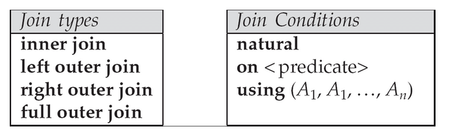
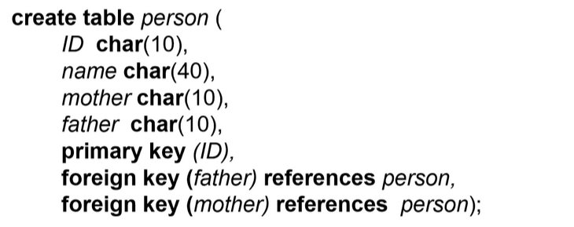
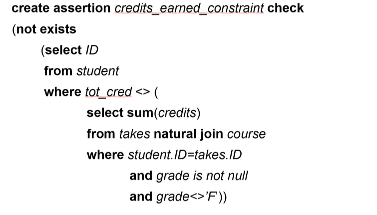
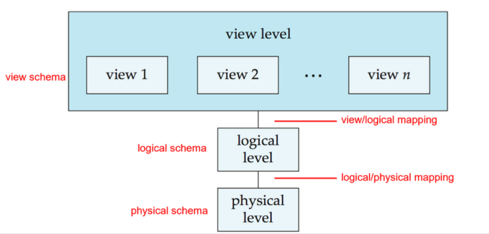
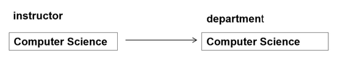
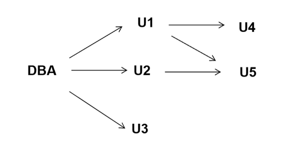

Chap 4: Intermediate SQL
约 3064 个字 77 行代码 6 张图片 预计阅读时间 32 分钟
Abstract
- Joined Relation
- SQL Data Types
- Integrity Constraints
- Views
- Indexs
- Transactions
- Autorization
Joined Relations
- 关系的连接 (Join) 是关系代数中最重要的操作之一
- 连接操作的结果是一个新的关系，它包含了两个关系中所有的元组

- 连接类型
- 内连接(inner join)：只保留两个关系中相同属性的值相等的元组
- 例如：
R1 INNER JOIN R2 ON R1.A = R2.B
- 例如：
- 外连接(outer join)：保留所有的元组，包括那些没有匹配的元组
- 例如：
R1 LEFT OUTER JOIN R2 ON R1.A = R2.B - left outer join：保留左表中所有的元组
- right outer join：保留右表中所有的元组
- full outer join：保留两个表中所有的元组
- 例如：
- 交叉连接(cross join)：笛卡尔积，保留所有的元组
- 例如：
R1 JOIN R2
- 例如：
- 内连接(inner join)：只保留两个关系中相同属性的值相等的元组
- 连接条件
- natural join
- natural join 是一种特殊的内连接 (inner join)
- natural join 会自动识别两个关系中相同属性的值相等的元组
- 例如：
R1 NATURAL JOIN R2
- using 子句
- using 子句用于指定连接条件中使用的属性
- using 子句可以简化连接条件的书写
- 例如：
R1 JOIN R2 USING (A, B)
- on 子句
- on 子句用于指定连接条件中使用的属性
- on 子句可以包含任意的逻辑表达式
- 例如：
R1 JOIN R2 ON R1.A = R2.B AND R1.C > R2.D
- natural join
ON 子句和 WHERE 子句的区别
- ON 子句
- 作用：专门用于连接表时指定关联条件（如 JOIN 操作
） ，定义表之间的匹配规则。 - 适用场景：所有类型的连接（INNER JOIN、LEFT JOIN、RIGHT JOIN、FULL JOIN）中，指定表间关联的列或条件。
- 示例：
- 作用：专门用于连接表时指定关联条件（如 JOIN 操作
- WHERE 子句
- 作用：在生成临时表后对结果进行过滤，筛选最终返回的数据。 适用场景：所有查询，用于全局过滤符合条件的行。
- 示例：
Outer Join 的应用
Select instructor.id, count(course_id),count(takes.id)
From (instructor natural left outer join teaches)
left outer join takes using(course_id,sec_id,semester,year)
Group by instructor.id;
含义：提取每位教师教授的课程数以及每位教师教授的课程总的选修人数
SQL Data Types and Schemas
Built-in Data Types in SQL
- data: Containing year, month and date
- Example: data '2005-7-27'
- time: Time of day, in hours, minutes and seconds.
- Example: time '09:00:30'
- timestamp: data plus time of day
- Example: timestamp '2005-7-27 09:00:30.75'
- interval: period of time
- Example: interval '1' day
- Substracting a data/time/timestamp value from another gives an interval value
- Interval values can be added to date/time/timestamp values
- data, time functions:
- current_data(), current_time()
- year(x), month(x), day(x), hour(x), minute(x), second(x)
User-Defined Types
- 用户定义类型是 SQL 中的一种数据类型
- 用户定义类型可以是基本数据类型的组合
- 我们通过
create type语句来创建用户定义类型
Example
create type Dollars as numeric(12,2)
create table department
(dept_name varchar(20),
building varchar(15),
budget Dollars);
- 这里的
Dollars就是一个用户定义类型 Dollars是一个 numeric 类型，精度为 12，标度为 2Dollars可以作为属性用于定义表中的列
用户定义类型的好处是：
- 可以更加灵活的定义类型
- 可以支持强类型检查
- 例如：虽然美元和欧元都是货币类型，可以用基本类型 numeric 来表示，但实际上他们是不同的类型，存在汇率转换，因此不能直接相加。通过用户定义类型分别定义这两种钱币，可以避免出现如 200 美元 +300 人民币得到 500 元的错误
Domains
- 类似于 User-Defined Types， Domain 是 SQL-92 中的一种用户自定义数据类型
- 但是 Domains 可以拥有 constraints， 例如 not null:
create domain person_name char(20) not null
Example
Large-Object Types
Large objects(photos videos, CAD files, etc.) are stored as a large object.
- blob: binary large object -- object is a large collection of uninterpreted binary date(whose interpretation is left to an application outside of the database system)
- MYSQL BLOB datatypes:
- TinyBlob: 0-255 bytes
- Blob: 0-64K bytes
- MediumBlob: 0-16M bytes
- LargeBLob: 0-4G bytes
- clob: character large object -- object is a large collection of character data
- When a query returns a large object, usually a pointer is returned rather than the large object itself
Integrity Constraints
not nullprimary keyforeign key-
uniqueunique(A1, A2, ..., Am): The unique specification states that the attributesA1, A2, ..., Amfrom a super key( 不一定是 candidate key)比如学生个人信息，我们知道 ID 是主键，但是实际上邮箱、电话号码等也不能是相同的，所以我们要通过语句告诉数据库，数据库会为我们维护这些完整性约束条件
-
check(P)，where P is a predicatecheck约束条件是一个布尔表达式，只有当表达式为真时，才允许插入或更新数据- 例如
Integrity COnstraint Violation During Transactions
交易期间违反了完整性，例如：

在一个人的父母还没插入时，无法插入这个人，以此类推。
可以规定，在这个事务结束时在检查完整性约束条件，中间状态可以不满足。
asserstion
create assertion <assertion-name> check <predicate>;
Exmample
验证一个学生获得的总学分，要等于获得的每门课的学分的总和。

但是用aassert后，每个元组的每次状态更新都要进行检查，开销过大，数据库一般不支持。
View
A view provides a mechanism to hide certain data from the view of certain users.
View Definition
视图是使用具有以下形式的创建视图语句定义的：`create view v as < query expression >
例如 A view of instructors without their salary
view 可以理解为：是一种可以隐去一些用户不需要知道 / 无权限知道的细节，也可以另外加上一些统计数据的虚表。我们可以把 view 当作表进行查询，所有语法基本相同
并且不仅可以通过真实表来定义视图，也可以通过视图来定义视图
例如：
create view physics_fall_2009 as
select course.course_id,sec_id,building,room_number
from course, section
where course.course_id = section.course_id
and course.dept_name = 'Physics'
and section.semseter = 'Fall'
and section.year = '2009'
create view physics_fall_2009_watson as
select course_id, room_number
from physics_fall_2009
where building = 'Watson';
view 的 3 个好处
- 隐藏不必要的细节，简化用户视野
- 有利于进行权限控制（如学生可以看到教师的个人信息，但是不能看到教师的工资，不然不利于团结）
- 区别于真实表，有独立性，使得数据库应用具有较强的适应性
Update of a view
对于一个 view 进行修改，相当于通过这个窗口对原表继续修改
例如：(Add a new tuple to faculty view which we defined earlier)
create view faculty as
select ID, name, dept_name
from instructor
Insert into faculty values('30765','Green', 'Music');
插入后，原表也会有这条数据，对于插入的 values 中缺少的salary属性，数据库会自动设定为NULL
不可更改的情况
就上面的例子而言，显然我们可以发现，当原表定义时的salary属性约束为not NULL时，会造成矛盾，所以我们无法执行这次插入，系统会报错。
另外，当视图中涉及原表中没有的属性（例如统计的属性列
View and Logical Data Independence
有些时候，关系表属性列过多，导致关系过大，我们希望将其分裂成两个子关系，而让子关系通过一些约束建立联系。
那么如果关系 \(S(a,b,c)\) 被分裂成两个子关系 \(S_1(a,b)\) 和 \(S_2(a,c)\)，我们如何实现逻辑数据独立？
create table S1...;create table S2...;create table S1...;create table S2...;insert into S1 select a, b from S;insert into S2 select a, c from S;drop table S;create view S(a, b, c) as select a, b, c from S1 natural join S2;
select * from S where... 实际上是在做 select * from S1 natural join S2 where ... （系统会帮我这样做，程序不用改，只是执行改变了） insert into S values (1,2,3) 实际上是在做 insert into S1 values (1,2) 和 insert into S2 values (1,3)
回到 Chap1 view-of-data 的这张图上

View 的定位其实是面向用户的接口层，定义用户课件的数据组织形式，不产生真实的物理数据，是一张“虚表”
而在实际运作时，将对 view 操作的语句通过 view-logical mapping 映射到 logical 层，再对 logical 以及 physical 上存在的真实表进行操作
*Materialized Views
Materializing a view: create a physical table containing all the tuples in the result of the query defining the view.
本来的视图是一个虚的表，为了查询执行效率，我们可以把 view 定义为 Materializing view, 即生成一张临时表与其对应select.... from.... where....的 sql 子句，使得查询语句可能出现较多的嵌套。
然而缺点是：
- 如果查询中使用的关系被更新，则物化视图结果就会变得过时。
- 因此需要时常维护视图，当底层关系更新时，通过更新视图来维护视图
这也体现了数据库中的一个比较核心的思想：查询效率和维护频率往往不能兼有，查询效率的提升通常意味着维护频次的提升
Indexes
索引是用于加速访问具有索引属性的指定值的记录的数据结构
Index 相当于在数据上建立了 B+ 树索引（物理层面）
Example
create table student
( ID varchar (5),
name varchar (20) not null,
dept_name varchar (20),
tot_cred numeric (3,0) default 0,
primary key (ID) )
create index studentID_index on student(ID)
`select * from student where ID = '12345' 在数据库内不同的物理实现有不同的查找方法
如果没有定义索引，只能顺序查找。如果有索引，系统内会利用索引进行查找。
Transactions
- Transactions begin Implicitly
- But can be manually ended by
commit work/commitorrollback work/roolback
- But can be manually ended by
- By default on most databases: each SQL statement commits automatically
- Can turn off auto commit for a session e.g. in MYSQL,
SET AUTOCOMMIT = 0;
- Can turn off auto commit for a session e.g. in MYSQL,
Example
SET AUTOCOMMIT=0
UPDATE account SET balance=balance-100 WHERE ano=‘1001’;
UPDATE account SETbalance=balance+100 WHERE ano=‘1002’;
COMMIT;
UPDATE account SET balance=balance -200 WHERE ano=‘1003’;
UPDATE account SET balance=balance+200 WHERE ano=‘1004’; COMMIT;
UPDATE account SET balance=balance+balance*2.5%;
COMMIT;
ACID Properties
A transaction is a unit of program execution that accesses and possibly updates various data items.To preserve the integrity of data the database system must ensure: ACID
- Atomacity（原子性
） ：事务的所有操作要么都正确地反映在数据库中，要么都不反映 - Consistency（一致性
） ：事务执行前后，数据都是正确的，不存在矛盾 - Isolation（隔离性
） ：尽管多个事务可以并发执行，但是每个事务不能知道其他并发执行的事务，多个事务之间需要隔离，事务的中间结果需要对其他事务隐藏。 - Durability（持久性
） ：事务完成后，即使系统出现故障（如断电等） ，它对数据库所做的更改仍然会保留下来
Authorization
-
Forms of authorization on parts of the database
数据层面，即表已经存在我们可以对其进行的操作
- Select - allows reading, but not modification of data.
- Insert - allows insertion of new data, but not modification of existing data.
- Update - allows modification, but not deletion of data.
- Delete - allows deletion of data.
-
Forms of authorization to modify the database schema
能否定义表，索引等
- Index - allows creation and deletion of indices.
- Resources - allows creation of new relations.
- Alteration - allows addition or deletion of attributes in a relation.
- Drop - allows deletion of relations.
Authorization Specificaton in SQL
sql 通过 grant 语句 grant <privilege list> on <relation name or view name> to <user list>
把某个表或者视图上的权限授权给用户
其中<user list> 可以是 :
- a user-id
- public, which allows all valid users the privilege granted
- A role (more on this later)
Example
grant select on instructor to U1, U2, U3,
grant select on department to public
grant update(budget) on department to U1, U2
grant all privileges on department to U1
可见，其中 update 可以细化到具体对表或视图中的哪一列做修改
Revoking Authorization in SQL
The revoke( 收回 ) statement is used to revoke authorization
revoke <privilege list> on <relation name or view name> from <user list>
Roles
Previleges can also be granted to Roles
roles（角色）介于 user list 和 privilege list 之间，本质是一组权限的集合，而通常它也会被授权给特定的人群，代表了数据库权限中的一种角色
我们可以通过create role <role-name>创造角色，随后可以把权限授予给他
graph LR;
privilege --> role;
privilege --> usr;
role --> role;
role --> usr;Example
create role instructor;
grant select on takes to instructor;
grant instructor to Amit;
create role teaching_assistant;
grant instructor to teaching_assistant;
这里我们创建了一个角色 instructor，授予了他对表 takes 的查询权限，并且将这个角色授予了用户 Amit
另外我们还创建了一个角色 teaching_assistant，并将 instructor 的权限授予了 teaching_assistant
Reference Authorization Features
对于一张表能否引用到其他表，我们也需要设置权限
例如通过以下语句赋予用户Mariano为 instrucotr 到 department 设置外键的权限 :

grant reference (dept_name) on department to Mariano;
为什么引用也需要权限控制
我们会发现，对于引用的四种方式，其中cascade , set null , set default不会对其他表如被引用的表造成影响，但是如果是restrict，那么就会对其他表造成影响，让被引用的表中的某些记录不能被更新和删除。
因此引用的权限控制还是有必要的
Transfer of privileges
-
grant select on department to Amit with grant option;
加上 with grant option 后，用户可以把获得的权限传递下去。
-
revoke select on department from Amit, Satoshi cascade;
cascade 把该用户及其授予的权限全部收回，级联反应。
-
revoke select on department from Amit, Satoshi restrict;
restrict 只收回该用户的权限。
-
revoke grant option for select on department from Amit;
收回用户转授的权力。

`